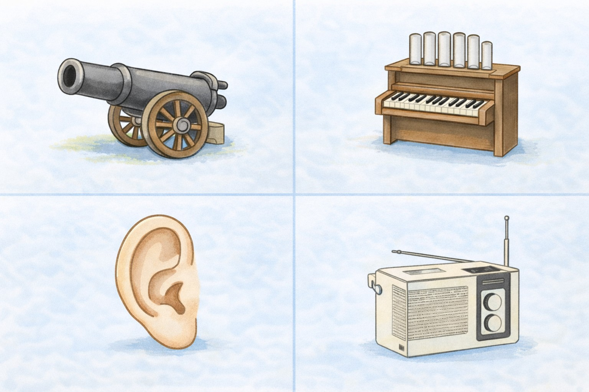

見る時間 60秒
認知機能検査 16枚の絵 練習
4枚ずつ絵を見て、最後に16枚をまとめて思い出す練習です。
まず音声を聞いてから、絵を覚えてください。
1 / 4ページ

音声を聞くと、絵がはっきり表示されます。
ヒントなしで答えてください
覚えている絵を、できるだけ多く書いてください。
分類のヒントです。この分類から絵を思い出してください。
ひらがな、カタカナ、漢字のいずれかで答えてください。
このページは練習用です。実際の検査と完全に同じ内容・手順・採点方法を再現するものではありません。絵を見て思い出す練習、分類から思い出す練習としてご利用ください。